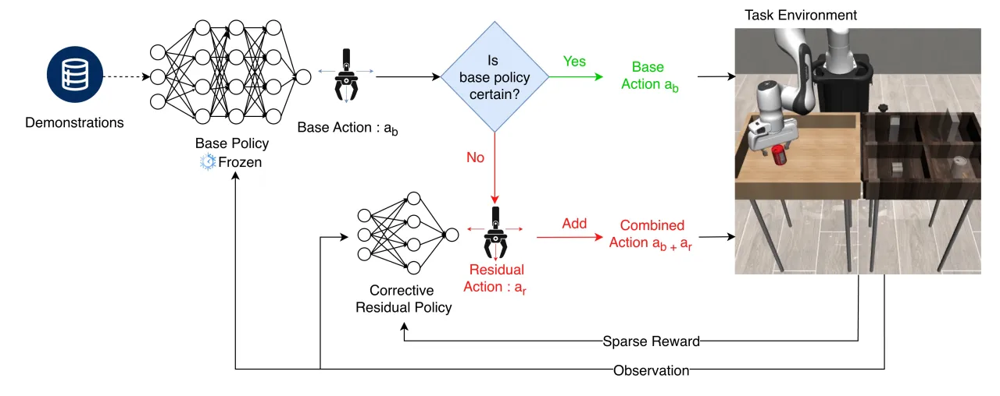
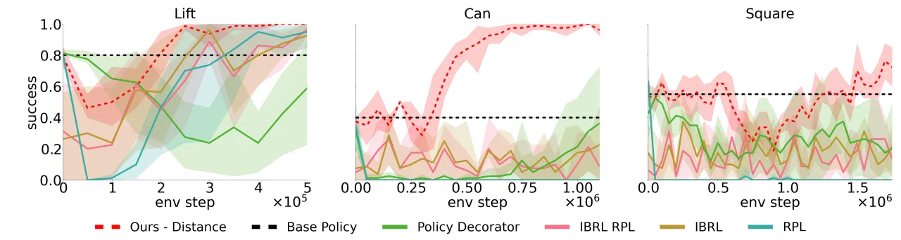
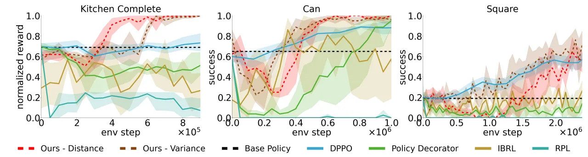
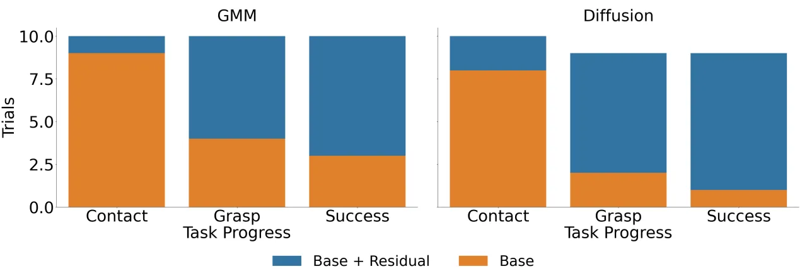
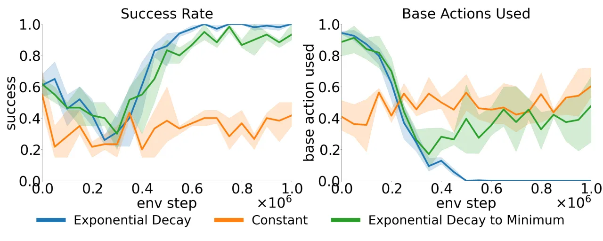

Residual RL 在冻结的 base policy 上学一个轻量的 residual 修正策略，比全参数微调更省样本，但在稀疏奖励下探索困难，且默认只面向确定性 base policy。本文提出两处改进：(1) 用 base policy 的不确定性把探索聚焦到它不自信的区域；(2) 让 off-policy critic 观测 base action，从而稳健地处理 Gaussian / Diffusion 等随机 base policy。
从演示中做 imitation learning 得到的 base policy 往往能完成任务的大部分，但存在系统性缺陷或分布偏移。与其昂贵地重训整个策略，Residual RL 冻结 base policy、只学一个 residual policy 输出修正动作 ar，环境执行 ab + ar。这更省样本，但两点仍是瓶颈：
核心思路：base policy 在它自信的区域直接放行、把宝贵的探索预算留给它不自信的区域；同时让 critic 对“base 与 residual 如何切分动作”保持不变（invariant），从而适配随机 base policy。

方法建立在 off-policy 的 Soft Actor-Critic 之上，做两处改动：一个不确定性门控决定是否叠加 residual，一个组合动作（combined action）critic 让价值学习对随机 base policy 稳健。
用一个阈值 τ 门控 residual：当 base policy 在当前状态的不确定性低于 τ 时，只执行 base action；否则才叠加 residual 修正。τ 随训练指数衰减：τ = U · e−step/decay rate，训练初期信任 base policy、把探索限制在其不自信处，随后逐步交给 residual 接管。论文比较了两种不确定性判据：
uncertaintyd(s) = mind∈D ‖d − s‖；离演示越远越不确定。低维状态下有效，但作者指出在图像等高维输入上不可靠。uncertaintye(s)；作为 epistemic 不确定性代理，在图像观测与 Kitchen Partial/Mixed 上更稳健。对 off-policy residual 学习做一个简单但关键的修改：critic 不再只对 residual 动作估值，而是对组合动作估值 Q(s, ac)，ac = ab + ar；actor 仍然只输出 residual πr(ar|s)。这样 critic “对 residual 与 base 如何切分动作保持不变（invariant）”，能观测到当步实际采样的随机 base action，从而正确处理 Gaussian / Diffusion 这类随机 base policy。消融显示：面对随机 base policy，combined action 形式是必需的——只对 residual 估值会失效。
环境：Robosuite 的 Lift / Can / Square（稀疏奖励、state-based），以及 D4RL Franka Kitchen 的 Complete / Partial / Mixed。Base policy：Robomimic 的 GMM（RNN backbone）行为克隆，以及 Diffusion policy（20 步去噪，action horizon 1）。对比基线：微调类 DPPO（Diffusion Policy Policy Optimization）；demo-augmented RL 的 IBRL / IBRL-RPL；residual RL 的 Policy Decorator 与标准 RPL（Residual Policy Learning）。指标为随环境步数的成功率。




论文指出方法 “would also benefit from a more robust epistemic uncertainty metric”——当前 distance-to-data / ensemble variance 都只是不确定性的近似代理。
在 Kitchen Partial / Mixed 这类由随机 play 数据训练的场景，base policy 的置信度与其正确性不强相关，此时基于不确定性的门控优势减弱；distance-to-data 在高维图像输入上尤其 “less reliable”。
方法要求能从 base policy 拿到不确定性信号（集成方差）或访问原始演示集（distance-to-data），并需调阈值调度 τ 及其衰减率；若 base policy 不提供集成、或演示不可得，适用性受限。